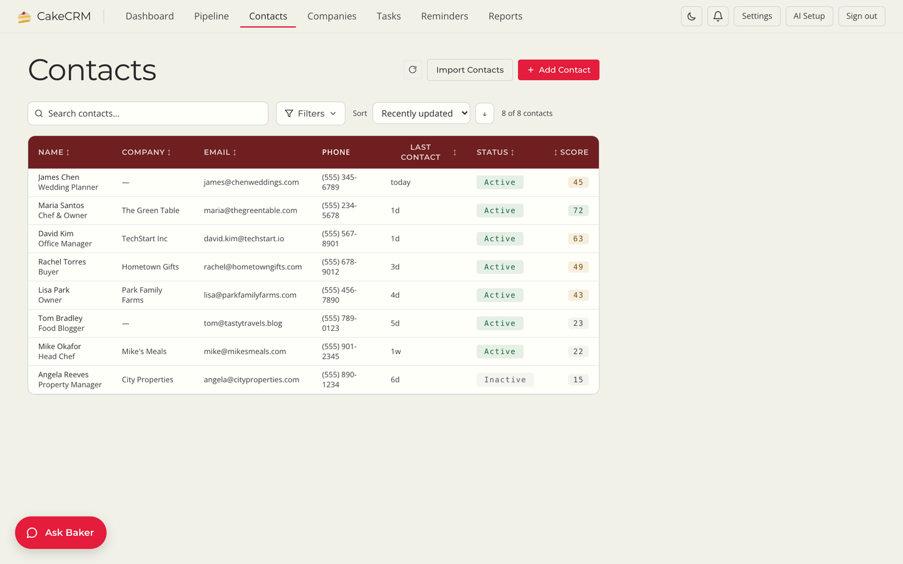

Free · Open source · Self-hosted
A CRM that stays
out of your way.
Most CRMs make your team work for the software. CakeCRM flips it: your people log a note and move a deal, and Baker, the built-in sales assistant, handles the rest — the follow-ups, the nudges, the pipeline digest.
Runs on your own server or one click in the cloud. Works with no AI key at all.

The tour
Three screens your team will actually use.
01
Start the day with what needs you.
The dashboard opens on a Today list: the overdue call, the menu that goes out this afternoon, the reminder you set last week. Under it, the pipeline number and the stats that matter, nothing else.

02
Every contact, one glance.
Company, last contact, status and a lead score on one row. Search and filter across your whole book without a page reload. Import from CSV or vCard in a minute.

03
Ask Baker. Optional, and it knows what you're looking at.
Add any AI provider key — Anthropic, OpenAI, Gemini, Together, or a local Ollama model — and Baker reads the deal you have open, checks its health, and tells you the next step. It can log the call, draft the follow-up email into your Gmail drafts, and nudge you when a deal goes quiet. Every write asks first.

What it is
Built for small teams. Tested by bigger ones.
-
No per-seat fees
AGPL-3.0, free forever. Add your whole team with admin and member roles and pay nothing extra for the tenth seat.
-
Your data stays yours
One PostgreSQL database on a server you control. Back it up with
pg_dump. Leave whenever you like and take everything with you. -
Works with zero AI keys
Contacts, companies, pipeline, tasks, analytics, lead scoring and CSV import all run with no AI configured. The assistant is a feature you switch on, not a gate.
-
Bring any model
Anthropic, OpenAI, Google Gemini, Together AI, or a local model through Ollama. Keys are entered in the app and encrypted at rest.
-
Reads email, never sends it
Baker can search your Gmail and put a draft in your Drafts folder for you to send. There is no send capability anywhere in the code, by design.
-
Talk to it from your phone
Link a Telegram bot and ask about a deal, log a call or capture a task from wherever you are. Confirmations arrive as Approve / Deny buttons.
Get it
Running in five minutes.
- Deploy. Click the Railway button and set a password. Railway provisions PostgreSQL and starts CakeCRM. Prefer your own hardware?
python run.pystarts everything locally with Postgres in Docker. - Sign in. Load the sample data to look around, or import your contacts from CSV.
- Optionally, hire Baker. Paste an AI provider key in Settings. Skip this step and the CRM is still the whole CRM.